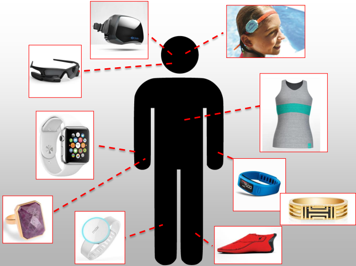
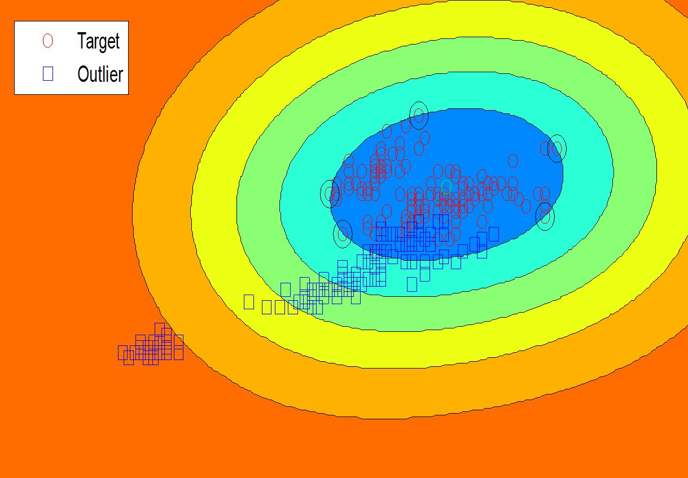

Reza Sadeghi

- Research Trainee, Division of Sleep and Circadian Disorders, Brigham and Women's Hospital, Harvard Medical School
- Graduate Research Assistant, Kno.e.sis Research Center, Wright State University
- CV: [pdf]
- Resume: [pdf]
- Emails: rsadeghi@bwh.harvard.edu; sadeghi.2@wright.edu; reza@knoesis.org
- Online profiles:
BIO
Reza Sadeghi has attended the department of computer science and engineering at Wright State University as a PhD student in computer science. Right now, he is a research trainee at Brigham and Women's Hospital and a graduate research assistant at Data Science for Healthcare lab in the Ohio Center of Excellence in Knowledge-enabled Computing (kno.e.sis) He has achieved to publish several research papers in precious journals and conferences with high impact factors. Also, he is reviewer and program committee member of top conferences and journals such as WWW conference and IEEE Transactions on Fuzzy Systems.
Through his research, he had worked on different concepts especially, probabilistic graphical model, signal processing, and soft computing techniques. Currently, he tries to create a smart personalized clinical decision support systems based on state-of-the-art machine learning methods.
Education
- Ph.D., Computer Science 2017- Present
- Wright State University, Department of Computer Science and Engineering, Kno.e.sis Research Center, Dayton, OH, USA
- Advisor: Dr. Tanvi Banerjee
- M.S., Computer Engineering- Software 2013-2015
- International Imam Reza University, Department of Computer and Information Technology, Mashhad, Iran
- Thesis: Strengthening Support Vector Classifiers against Outliers by using Fuzzy Rough Set and Evolutionary Methods
- B.S., Computer Engineering- Software, 2008-2012
- Isfahan University of Technology (IUT), Department of Electrical and Computer Engineering, Isfahan, Iran
- Project: Designing & implementation of online library management website in IUT High School
Current Research
|
|
Dementia management
The aim of this study is to detect changes in behavior (agitation, depression, and apathy) and activity patterns of patients with dementia and their caregivers by using a combination of wearable and environmental sensors using a mobile platform. Detecting these behavior changes will result in a deeper understanding of the causes of mood and behavioral changes. This will involve detecting fluctuations in sleep patterns and evaluating the effects on stress using standard clinical methods. This can help predict mood events, which in turn can help alert clinicians for early intervention. For more information, please refer to “Dementia - knoesis wiki”. |

|
Alcohol withdrawal
By the definition of the World Health Organization, alcohol use disorder refers to any form of alcohol consumption that causes
health problems. Alcohol Withdrawal Syndrome (AWS) occurs roughly 4 to 72 hours following cessation or reduction of prolonged,
heavy alcohol ingestion. Withdrawal delirium or Delirium Tremens is considered the most dangerous symptom of AWS which can lead to
the death. During the initial 8 hours after the last drink, patients face with anxiety, insomnia, nausea, and abdominal pain.
This condition is followed by high blood pressure, increased body temperature, unusual heart rate, and confusion.
If this syndrome does not receive any treatment, the patients will suffer from hallucinations, fever, seizures, and agitation.
As a result, there is an essential need to predict and treat this syndrome in the initial stages.
|
|
 |
Validating wearable devices
With the introduction of the large number of fitness devices on the market, there are numerous possibilities for their use in elder care. For instance, monitoring dementia patients using commercially available devices that measure physiological signs like heart rate variability, breathing rate, and electrodermal activity could be used to predict episodic behavioral and psychological symptoms before they become distressing or disruptive. However, these devices are designed primarily for fitness assessment. This project follows validation of such sensors in a controlled environment with the target cohort population. |

|
Web mining
World Wide Web (WWW) is the biggest source of available information.
Web mining tries to extract desired data from this massive information in an efficient way.
The information is retrieved from three distinguished levels of content, structure, and usage
of accessible documents. From the perspective of web content mining, efficient algorithms can
convert huge source of texts, images, sounds, and videos into usable information.
However, each source of information implies different concepts in distinct context.
As a result, separating the accessible documents into distinguished categories,
known as web structure mining, is essential. The speed of producing new information
is too fast such that expert knowledge is not enough to categorize the huge amount of WWW information.
One of the best methods to address this issue is to consider the navigational behavior of users
known as web usage mining. I am following these three web mining levels
through text mining, web robots, and web structure characterization.
|

|
Structure learning
Learning Bayesian network structures from data is a NP hard problem
since the number of candidate graphs grows super-exponentially.
Through this research, the meaningful structure of data is investigated
to discover unknown relations in biomedical fields.
This research utilizes both advantages of constant-based and score-based
methods. Bayesian network learning is commonly executed as structure learning
and parameter learning, respectively. The structure learning point to learn
the structure of a directed acyclic graph. However, the parameter learning tries
to address learning the local distribution showed by the structure of learned
directed acrylic graph via the structure learning. Both learning stages can handle
by unsupervised and supervised learning methods.
|
Past Research
|
|
Mortality Prediction
Early hospital mortality prediction is critical as intensivists strive to make efficient medical decisions about the severely ill patients staying in intensive care units. As a result, various methods have been developed to address this problem based on clinical records. However, some of the laboratory test results are time-consuming and need to be processed. To address this issue, we proposed a novel method to predict mortality using features extracted from the heart signals of patients within the first hour of ICU admission. In order to predict the risk, quantitative features have been computed based on the heart rate signals of ICU patients. Outcomes of the experiments indicates that heart rate signals can be used for predicting mortality in patients in the ICU, achieving a comparable performance with existing predictions that rely on high dimensional features from clinical records which need to be processed and may contain missing information. The outcomes of this research is reported in “Early Hospital Mortality Prediction using Vital Signals” (Presentation slides / Source code) and has been accepted in IEEE/ACM CHASE 2018 and published in the journal of Smart Health. |

|
Tor structure characterization
Tor is among most well-known dark net in the world. It has noble uses, including as a platform for free speech and information
dissemination under the guise of true anonymity, but may be culturally better known as a conduit for
criminal activity and as a platform to market illicit goods and data.
Past studies on the content of Tor support this notion, but were carried out by targeting popular domains
likely to contain illicit content. A survey of past studies may thus not yield a complete evaluation of the content
and use of Tor. This work addresses this gap by presenting a broad evaluation of the content of the English Tor ecosystem.
The outcomes of this research are reported in “A Broad Evaluation of the Tor English Content Ecosystem”
and will be presented in "11th ACM Conference on Web Science".
|

|
Web Robot Detection
The accurate detection of web robot sessions from a web server log is essential to take accurate traffic-
level measurements and to protect the performance and privacy of information on a Web server. Moreover,
the irrecoverable risks of visits from malicious robots that intentionally try to evade web server
intrusion detection systems, covering-up their visits with fabricated fields in their http r
est packets,
cannot be ignored. To separate both types of robots from humans in practice, analysts turn to heuristic
methods or state-of-the-art soft computing approaches that have only been tuned to the specification of
a kind of web server. Noting that the landscape of web robot agents is ever changing, and that behavioral
patterns and characteristics vary across different web servers, both options are lacking. To overcome this
challenge, my colleagues and I proposed several methods based on Fuzzy Rough Set, Markov Clustering, Self-organizing Map concepts.
The report of this research is reflected in “A soft computing approach for benign and malicious web robot detection” (Source code) and
“Detection of Web site visitors based on fuzzy rough sets” published in Expert Systems with Applications journals (Impact factor: 3.928) and Soft Computing (Impact factor: 2.472), respectively.
|
|
 |
Outlier Detection Event handlers have wide range of applications such as medical assistant systems and fire suppression systems. These systems try to provide accurate responses based on the least information. Support vector data description (SVDD) is one of the appropriate tools for such detections, which should handle lack of information. Therefore, many efforts have been done to improve SVDD. Unfortunately, the existing descriptors suffer from weak data characteristic in sparse data sets and their tuning parameters are organized improperly. These issues cause reduction of accuracy in event handlers when they are faced with data shortage. Therefore, my colleagues and I proposed several methods based on Fuzzy Rough Set, Bat Algorithm, and Chaos theory. The results of this research is presented in “Weighted support vector data description based on chaotic bat algorithm” and “Automatic support vector data description” published in Applied Soft Computing journals (Impact factor: 3.541) and Soft Computing (Impact factor: 2.472), respectively. |

|
Dynamic Facility Location
Determination of facilities, such as factories or
warehouses, location and availability conditions is one of the
important and strategic decisions for an organization to make.
Transportation costs that form a major part of goods price are
dependent to this decision making. There are verity of methods
have been presented to achieve the optimal locations of these
facilities which are generally deterministic. In real world accurate
estimation of the effective parameters on this optimal location for
single or multiple time periods is difficult and merely impossible.In
this research, my colleagues and I tried to achieve an efficient model with
consideration of uncertainty demand over different time periods on
the basis of previously presented models that we call stochastic
dynamic facilities location problem. In order to do so we use
stochastic constrain programming which convert the stochastic
model to a deterministic one. The results of this research is presented in “Dynamic Facility Location with Stochastic Demand” and
Stochastic Facilities location Model by Using Stochastic Programming” published in Shiraz Journal of System Management.
|

|
Job Scheduling
Nowadays the requests of managers and other
persons who benefited by such projects for drop total
project’s cost have increased considerably. Besides,
the amount of changes exert on this factors can result
to variation in initial estimation of them. In this way,
however; by observing this types of changes in
different circumstances, the ideal quality for projects
is going to be considered. Moreover, generally in
realty world, either falling in time consuming or the
amount usage of resources for a task could not lead
to decline of task quality. As a result, assigning fixed
and deterministic values for assessing ideal quality
leading to unpredictable outcomes. I this study,
fuzzy logic developed remarkably to measure the
quality for wide range of tasks and activities in
various variation circumstances. At last, the
presented model apply to real case study and the
obtained values have proved the efficiency of
proposed model in comparison to others in
deterministic situations. The report of this research is reflected in
“Solving the equilibrium problem of time, cost, resource and quality of project network by using expanded fuzzy logic set”.
|
Selected Publications
- R. Sadeghi, T. Banerjee, W. Romine (2018), “Early hospital mortality prediction using vital signals”, Smart Health, special issue of IEEE/ACM CHASE conference 2018. (Presentation slides / Source code)
- J. Hamidzadeh, M. Zabihimayvan, R. Sadeghi (2018), “Detection of Web site visitors based on fuzzy rough sets”, Soft Computing, 22(7), 147-158, April 2018. (Impact factor: 2.472)
- R. Sadeghi, J. Hamidzadeh (2018), “Automatic support vector data description”, Soft Computing, 22(1), 147-158, January 2018. (Impact factor: 2.472)
- M. Zabihimayvan, R. Sadeghi, H. NathanRude, D. Doran (2017), “A soft computing approach for benign and malicious web robot detection”, Expert Systems with Applications, 87, 129-140, November 2017. (Source code) (Impact factor: 3.928)
- J. Hamidzadeh, R. Sadeghi, Neda Namaei (2017), “Weighted support vector data description based on chaotic bat algorithm”, Applied Soft Computing, 60, 540-551, November 2017. (Impact factor: 3.541)
- A. Gholinezhad Devin, K. Abedzadeh Ghuchani, R. Sadeghi , H. Koosha (2015), “Dynamic Facility Location with Stochastic Demand” , Shiraz Journal of System Management, 3:3, 77-90, Fall 2015.
- A. Gholinezhad Devin, K. Abedzadeh Ghuchani, R. Sadeghi (2013), “Stochastic Facilities location Model by Using Stochastic Programming”, Shiraz Journal of System Management, 1:4, 59-71, October 2013.
Research Service
- Journal editorial board member
- Mathematics and Computer Science (MCS)
- Journal reviewer
- Pattern Recognition
- Knowledge-Based Systems
- IEEE Transactions on Fuzzy Systems
- Journal of Big Data
- Journal of Medical Internet Research
- International Journal of Science and Business
- International Journal of Environmental Research and Public Health
- Conference program committee & external reviewer
- IEEE/WIC/ACM International Conference on Web Intelligence (WI'19)
- International Conference on Automation, Control and Robots 2019 (ICACR 2019)
- IEEE International Conference on Fuzzy Systems 2019 (FUZZ-IEEE 2019)
- Computing Conference 2019
- Intelligent Systems Conference (IntelliSys) 2019
- IEEE International Conference on Big Data (IEEE Big Data 2018)
- The Web Conference 2018
- International Conference on Automation, Control and Robots 2018 (ICACR 2018)
- The Biomedical Research Conference 2018
- Academic outreach coordinator
- Biomedical Research and Technology Association
- Student volunteer
- SIGIR conference, Ann Arbor, MI (2018)
Honors and Awards
- Travel grant award
- Honor date: Sep 2018
- Honor issuer: National Science Foundation
- Honor description: Received travel award for IEEE/ACM CHASE2018 , Washington, D.C., 2018
- Best paper award
- Honor date: Jan 2017
- Honor issuer: Vice Chancellor for Research and Technology of Imam Reza International University
- Honor description: “Detection of Web site visitors based on fuzzy rough sets” paper which has been published in Journal of Soft Computing received a monetary award.
- Best paper award
- Honor date: Nov 2016
- Honor issuer: Vice Chancellor for Research and Technology of Imam Reza International University
- Honor description: “Automatic support vector data description” paper which has been published in Journal of Soft Computing received a monetary award.
- Top researcher
- Honor date: 2016
- Honor issuer: Vice Chancellor for Research and Technology of Imam Reza International University